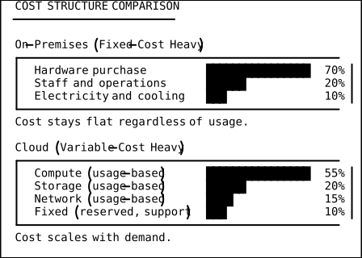
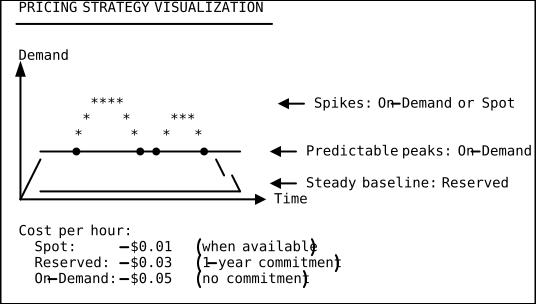
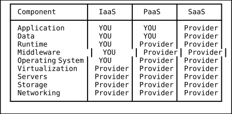
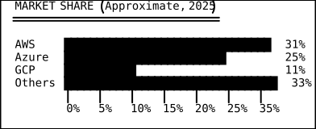

The Utility Computing Mental Model
Core Idea: Cloud Is a Public Utility
The single most powerful way to understand cloud computing is to compare it to electricity. Before the electric grid existed, every factory ran its own generator. The factory owner had to buy it, fuel it, maintain it, hire engineers, and keep spare parts on hand. Most of the time the generator sat at 20% capacity, but it had to be sized for peak load — the one hour a year when every machine ran simultaneously.
Then utilities arrived. A centralized power plant generated electricity far more efficiently than any single factory could. Wires carried it everywhere. Factories ripped out their generators and plugged into the grid. They paid only for what they used.
Cloud computing is that exact same transition — applied to computation, storage, and networking.
THE UTILITY ANALOGY
-------------------
ELECTRICITY CLOUD COMPUTING
------------------------- --------------------------
Power plant Hyperscaler data center
Transmission grid Global backbone / PoPs
Electric meter Usage metering (API calls,
GB-hours, vCPU-seconds)
Monthly electric bill Monthly cloud bill
Wall outlet (standard interface) APIs and SDKs
Factory's own generator On-premises data center
Voltage / frequency standards Service-level agreements
A Brief History: From Mainframes to Cloud
Understanding where cloud came from makes the utility model click.
Phase 1 — Mainframes (1950s-1970s)
Computing was born centralized. A single mainframe served an entire organization. Users accessed it via dumb terminals. The machine was enormously expensive, so time-sharing was invented: the mainframe sliced its CPU into small time quanta and gave each user the illusion of a private computer. This is the earliest ancestor of cloud multi-tenancy.
Phase 2 — Client-Server (1980s-1990s)
PCs arrived, and computing decentralized. Every department bought servers. Every desk had a workstation. The pendulum swung toward distributed ownership — and distributed waste. Utilization rates were terrible.
Phase 3 — Virtualization (2000s)
VMware and Xen made it possible to run multiple virtual machines on one physical server. Utilization improved from 10% to 40-60%. IT departments started “private clouds” — pools of VMs that teams could self-service.
Phase 4 — Public Cloud (2006-present)
Amazon launched S3 in March 2006 and EC2 in August 2006. The idea: anyone with a credit card could rent compute and storage by the hour, with no upfront commitment. Google and Microsoft followed. The public utility model was born.
TIMELINE
--------
1960s IBM mainframes, time-sharing
1980s PCs, client-server revolution
1999 Salesforce launches SaaS CRM
2002 AWS internal project begins
2006 S3 and EC2 launch
2008 Google App Engine (PaaS)
2010 Microsoft Azure GA
2011 OpenStack 1.0 (private cloud)
2014 AWS Lambda (serverless)
2017 Kubernetes becomes dominant
2020+ Multi-cloud, edge computing
Pay-Per-Use Economics: The Meter Analogy
The utility model’s economic power comes from metered billing. You do not pay for the machine; you pay for the work it does for you.
Dimensions of Metering
| Resource | Unit of Measure | Example Price (approximate) |
|---|---|---|
| Compute | vCPU-second or vCPU-hour | $0.0116/hr (t3.small) |
| Storage | GB-month | $0.023/GB-month (S3 Standard) |
| Network out | GB transferred | $0.09/GB (first 10 TB) |
| API calls | Per 1,000 or 1M requests | $0.004/10K GET requests (S3) |
| Database | Read/Write capacity units | $0.00065/WCU-hour (DynamoDB) |
Why This Changes Everything
With on-premises infrastructure, costs are mostly fixed. You buy servers, sign a co-location lease, hire staff. Whether you process 1,000 requests or 10 million requests, your costs barely change.
With cloud, costs are mostly variable. Process more, pay more. Process less, pay less. This transforms computing from a capital expenditure (CapEx) into an operating expenditure (OpEx).

Demand Curves and Pricing Models
Hyperscalers offer multiple pricing tiers because different workloads have different demand shapes. Understanding these shapes is key to cost optimization.
On-Demand Pricing
Full retail price. No commitment. Spin up, spin down, pay by the second (or hour). This is the “wall outlet” — always available, most expensive per unit.
Best for: Unpredictable workloads, short experiments, burst capacity.
Reserved Instances / Savings Plans
Commit to a certain level of usage for 1 or 3 years. In exchange, you get 30-72% discounts depending on the term and payment option (no upfront, partial upfront, all upfront).
Best for: Steady-state baseline workloads that run 24/7.
Spot / Preemptible Instances
Buy unused capacity at 60-90% discounts. The catch: the cloud provider can reclaim the instance with 2 minutes’ notice when demand rises.
Best for: Fault-tolerant, stateless, batch processing workloads.

Total Cost of Ownership (TCO): The Full Picture
The utility model does not always win on raw unit cost. A reserved EC2 instance might cost more per vCPU-hour than a depreciated server in your own rack. The cloud wins on total cost of ownership, which includes everything you do not have to do:
TCO Components
| Cost Category | On-Premises | Cloud |
|---|---|---|
| Hardware purchase | You buy it | Included |
| Data center space | You lease it | Included |
| Power and cooling | You pay it | Included |
| Network equipment | You buy it | Included |
| OS licensing | You license it | Often included |
| Hardware refresh (3-5 yr) | You plan it | Provider handles it |
| Staff (sysadmins, netops) | You hire them | Reduced headcount |
| Security (physical) | You implement it | Provider handles it |
| Compliance certs | You pursue them | Shared responsibility |
| Disaster recovery site | You build one | Multi-AZ by default |
| Over-provisioning buffer | 40-60% idle capacity | Scale dynamically |
A commonly cited rule of thumb: on-premises TCO is 2-4x the sticker price of the hardware alone when you factor in everything above.
The Pizza-as-a-Service Analogy: IaaS, PaaS, SaaS
One of the most effective ways to distinguish cloud service models is the pizza analogy. Every layer you move up, you manage less and the provider manages more.
THE PIZZA ANALOGY
==================
On-Prem IaaS PaaS SaaS
(Homemade) (Takeaway) (Delivery) (Dine Out)
-------- -------- -------- --------
You make You make You make They do
the table the table nothing everything
You make You make They make
the oven nothing the oven
You make They make
the dough the dough
You add They add
toppings toppings
You bake They bake
You serve They serve They serve
You eat You eat You eat You eat
Cloud Mapping:
On-Prem = Your data center, your hardware, your everything
IaaS (EC2) = Provider gives you VMs, you manage OS and up
PaaS (Heroku, Elastic Beanstalk) = Provider manages runtime
SaaS (Gmail, Salesforce) = Provider manages everything
What You Manage at Each Layer

Hyperscalers as Power Plants
AWS, Azure, and GCP are the “power plants” of the cloud era. Their scale creates economic advantages that are nearly impossible to replicate.
AWS (Amazon Web Services)
- Market share: ~31% of the global cloud market (2025)
- Regions: 33+ geographic regions, 105+ availability zones
- Services: 200+ distinct services
- Analogy: The oldest, largest power plant with the most plug types. If you need an obscure adapter (service), AWS probably has it.
- Key strength: Breadth of services, ecosystem maturity
Microsoft Azure
- Market share: ~25%
- Regions: 60+ regions
- Key strength: Enterprise integration (Active Directory, Office 365, Windows Server). If your company runs on Microsoft, Azure is the path of least resistance.
- Analogy: The power company that also sells you the appliances.
Google Cloud Platform (GCP)
- Market share: ~11%
- Key strength: Data analytics (BigQuery), machine learning (Vertex AI), Kubernetes (GKE, since Google invented Kubernetes).
- Analogy: The power company run by the engineers who invented the turbine. Technically excellent, smaller customer base.

Real-World Examples
Netflix on AWS
Netflix is the canonical cloud-native success story. In 2008, Netflix experienced a major database corruption that took their DVD shipping service offline for three days. This motivated their migration from on-premises data centers to AWS, which took seven years (2008-2015).
Why cloud? Netflix’s demand is wildly variable. On a Friday evening, they might serve 250 million concurrent streams. At 3 AM on a Tuesday, a fraction of that. Owning enough hardware for Friday night peaks meant wasting money the other 95% of the time.
Key patterns Netflix uses:
- Auto Scaling groups that expand and contract with viewership
- Multiple AWS regions for global coverage and fault tolerance
- Chaos Monkey (intentional failure injection) to ensure resilience
- S3 for content storage, CloudFront for CDN delivery
- DynamoDB for user profiles and viewing history
Result: Netflix estimates they save 80% compared to running equivalent on-premises infrastructure, while serving 260+ million subscribers across 190+ countries.
Spotify on GCP
Spotify migrated from on-premises data centers to Google Cloud Platform between 2016 and 2018. Their motivation was different from Netflix: Spotify wanted to stop managing infrastructure and focus engineering effort on music discovery and recommendation algorithms.
Key patterns:
- BigQuery for analyzing petabytes of listening data
- Google Kubernetes Engine for microservice orchestration
- Dataflow for real-time event processing
- Cloud Bigtable for low-latency personalization data
Result: Spotify’s infrastructure team shrank from hundreds of engineers managing bare metal to a smaller team managing cloud resources, freeing up engineering capacity for product development.
When the Utility Model Breaks Down
The utility model is not universally superior. Be aware of its limits:
-
Steady, predictable workloads: If your servers run at 80% utilization 24/7/365, on-premises may be cheaper over a 5-year horizon. The cloud premium pays for flexibility you are not using.
-
Data gravity: Once you store petabytes in one cloud, moving it becomes prohibitively expensive (egress fees). You are economically locked in, much like being locked into a utility provider in a region with no competition.
-
Regulatory constraints: Some industries (banking, defense, healthcare in certain jurisdictions) cannot or will not place data in shared public infrastructure.
-
Ultra-low latency requirements: If you need sub-millisecond response times, being physically close to your hardware (on-premises or colocation) may be non-negotiable.
-
The repatriation debate: Companies like Basecamp (37signals) have publicly moved workloads back on-premises, claiming 60% cost savings. This works when workloads are stable and the team has strong ops skills.
Key Takeaways
-
Cloud is a utility, not a technology. The innovation is the business model (metered, on-demand, no commitment), not the hardware.
-
Variable cost beats fixed cost when demand is uncertain. The less you can predict your future needs, the more cloud’s flexibility is worth.
-
TCO matters more than unit price. A cloud VM might cost more per hour than a physical server, but you are not paying for the floor space, power, cooling, staff, and over-provisioning.
-
Pricing models are a strategic choice. Reserved for baselines, on-demand for variability, spot for fault-tolerant batch work.
-
Hyperscalers compete on breadth, integration, and ecosystem. AWS has the most services, Azure has the best Microsoft integration, GCP has the strongest data and ML platform.
-
The utility model has limits. Stable workloads, data gravity, regulatory constraints, and latency requirements can make on-premises the better choice.
-
Think in economics, not hardware. The shift from CapEx to OpEx changes how organizations plan, budget, and operate. Cloud is as much a financial transformation as a technical one.
DSA Connections
Amortized Analysis — Pay-Per-Use Metering
Amortized analysis assigns an average cost to each operation in a sequence, even when individual operations vary wildly in expense — exactly how cloud billing works. A single API call might trigger a burst of compute, but the metered cost per vCPU-second smooths that spike into a predictable per-unit charge, just as inserting into a dynamic array is O(1) amortized despite occasional O(n) resizing. When a hyperscaler prices an on-demand instance at $0.0116/hr, that flat rate amortizes the provider’s capital expenditure, cooling, staffing, and over-provisioning buffer across millions of metered hours. The customer experiences a constant per-unit price; the provider absorbs the variance — the same mental shift that amortized analysis demands when reasoning about worst-case vs. average-case costs.
Token Bucket Algorithm — Demand Shaping and Burst Capacity
The token bucket algorithm adds tokens at a fixed rate and lets a consumer spend accumulated tokens in bursts, enforcing a long-run average rate while permitting short spikes. AWS burstable T-series instances implement exactly this pattern: CPU credits accrue at a steady rate while the instance is idle, and the instance spends those credits to burst above its baseline during demand peaks. S3 request rate limits, API Gateway throttling, and DynamoDB provisioned capacity all use token-bucket-style rate limiting. The algorithm elegantly mirrors the utility model’s promise of “pay for what you use, burst when you need to” by bounding the average consumption while allowing instantaneous elasticity.
Dynamic Programming — Optimal Pricing Strategy Selection
Dynamic programming solves optimization problems by breaking them into overlapping subproblems and caching intermediate results. Choosing the cost-optimal mix of Reserved Instances, Savings Plans, On-Demand, and Spot across dozens of instance types, regions, and commitment lengths is a multi-dimensional optimization problem with exactly this structure: the optimal coverage for month 12 depends on commitments made in months 1 through 11, and the subproblems (covering each workload segment) overlap heavily. AWS Cost Explorer’s RI purchase recommendations effectively solve a DP-style knapsack variant, selecting which commitment combinations minimize total cost subject to budget and coverage constraints.
Mental Model Summary
When you think about cloud computing, think about the electric grid:
- Before: Every factory runs its own generator (data center).
- After: A centralized utility (hyperscaler) generates at scale, distributes via a grid (global network), meters usage (APIs and billing), and charges per unit consumed.
- Your job shifts from “keep the generator running” to “design machines that use electricity efficiently.”
This is the foundational mental model. Every other cloud concept — elasticity, fault tolerance, networking, cost management — is a consequence of this utility transformation.